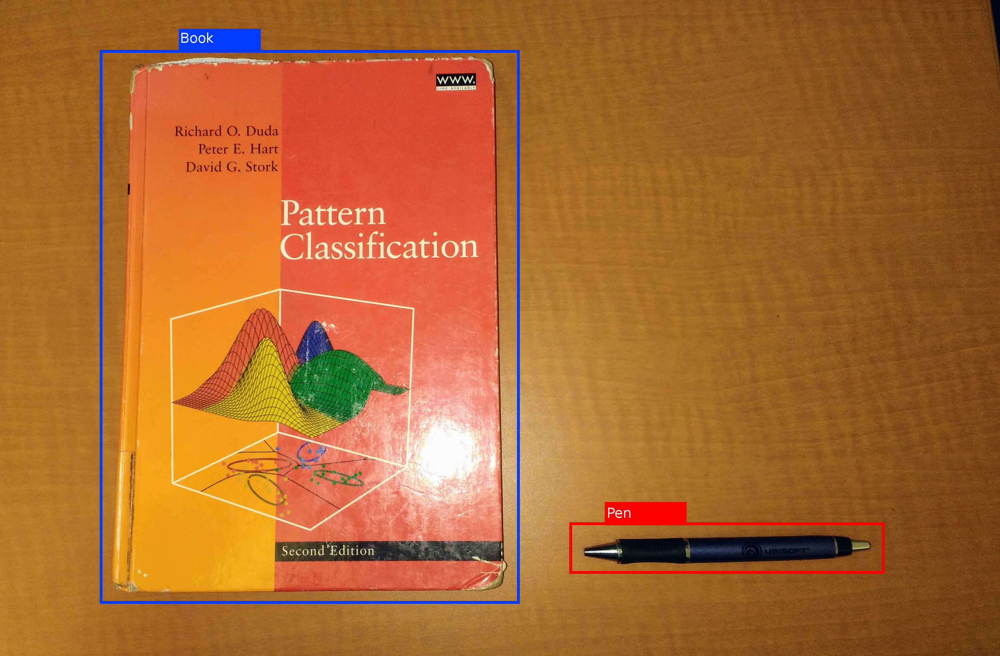
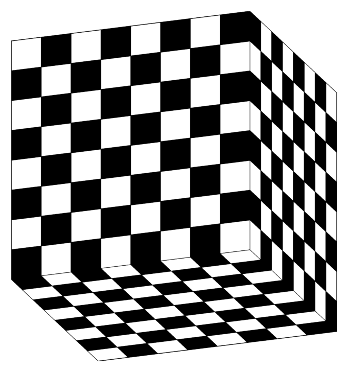
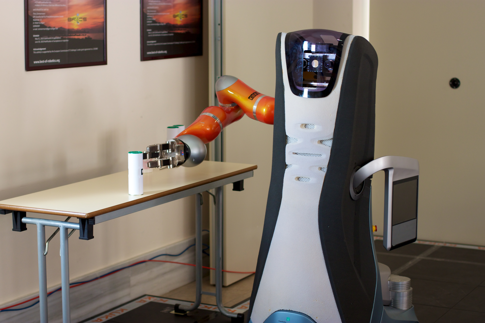
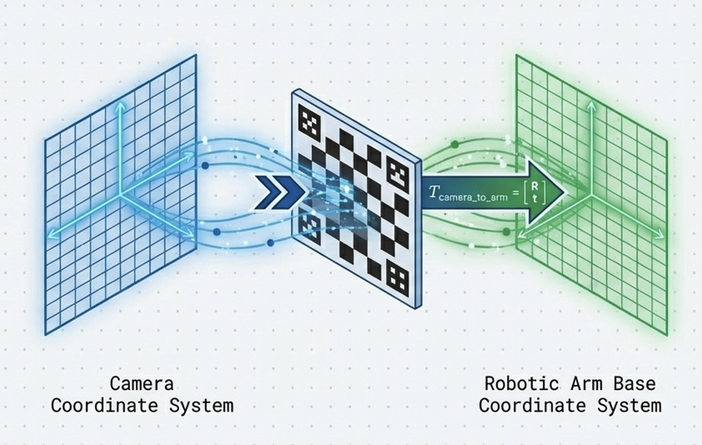
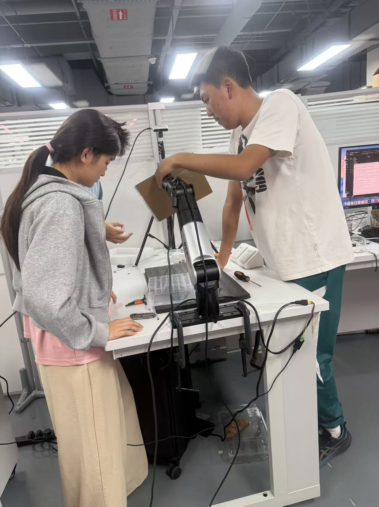

RealSense D435i input*
RGB and depth streams define the base observation layer for bottle and cup sorting in real time.

* External reference image. Source: Marc Auledas, CC BY-SA 4.0.
The system links YOLO11 perception, RGB-D localization, coordinate transformation, and robot control into one sorting pipeline.
RGB and depth streams define the base observation layer for bottle and cup sorting in real time.
* External reference image. Source: Marc Auledas, CC BY-SA 4.0.
Model inference produces bottle and cup labels plus 2D boxes before the system estimates physical target position.

* External reference image. Source: Hughesperreault, CC BY-SA 4.0.
Depth-aware visual data is translated into robot coordinates so the manipulator can act on detections physically.

* External reference image. Source: Ibai Gorordo, CC BY-SA 4.0.
The arm aligns above the target, adapts to height changes, and then executes categorized grasp-and-place behavior.

* External reference image. Source: Paul Beaudry, CC BY-SA 2.0.
These visuals show the calibration setup and live perception outputs used during robot operation.
This calibration procedure establishes the relationship between camera observations and robot coordinates.

This setup image documents the physical preparation needed before coordinate transformation and end-to-end motion could be trusted.

This clip isolates the alignment stage, showing how the arm maintains a controlled relationship to the target before grasp execution.
This detection clip shows the perception output directly, including object labels and the targeting information used by the rest of the pipeline.
Sensor frames arrive from the D435i and establish the live scene.
Bottle and cup targets are classified with live bounding boxes.
Depth is sampled around the target to estimate camera-space XYZ.
Visual coordinates are converted into actionable robot-space targets.
The arm tracks the object and maintains a proper approach distance.
The dexterous hand grips with tuned force and releases into the correct bin.
The web layer helps operators and judges understand what the robot is seeing, tracking, and doing during the run.
Each subsystem was validated separately before end-to-end runs, including detection, localization, calibration, and manipulator motion.
Current results focus on prototype validation, while broader deployment, additional categories, and longer autonomous runs remain future work.